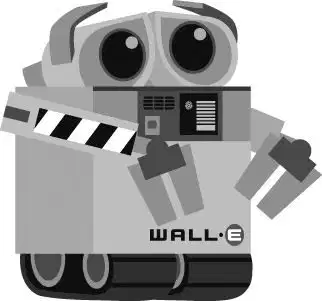

单轨电车滑行穿越泳池甲板，最后停在飞船舰桥的入口处。戈法将运输器驶入舰桥巨大的门厅里，那里只有一个孤单的打字机器人。运输器停了下来，对着机器人的写字台“嘟”了一声，一扇大门降了下来，运输机“咻”的一声飞快冲了进去。
瓦力来到舰桥上，躲在一个巨大的圆形房间的阴影里。“功理”号船长和它的自动驾驶仪兼舵轮傲特在舰桥上控制飞船。
傲特看上去似乎控制着这个房间。他的舵轮中央有只大眼睛，能同时看到泳池甲板和窗外的深邃太空。他有一个长长的机械触手，他用它当手来帮他按按钮或拿东西，甚至时不时地还用它举起物品。
戈法向傲特敬礼，并把伊芙交给他检查。瓦力看着傲特扫描了伊芙，然后开始快速计算，直到他的屏幕上闪烁着一个代码。傲特和戈法“嘟嘟嘟”地交流了几句，然后点了点头。
瓦力感到他脚下的地板在移动。他强忍住尖叫的冲动，然后意识到他正站在一扇活动天窗上，但是已经太迟了。活动天窗通向下一层的船长舱房，而瓦力正摔落在那里。
傲特没有发现瓦力，他跟在他后面从活动天窗飞了下来，并打开了船长的闹钟。瓦力在昏暗的房间里缩成盒状，躲了起来。
“船长，”傲特对着床上一个正在打呼的人说道，“我们需要你到舰桥上来一下。”然后傲特回到了舰桥上。
房间里这时候除了睡着了的船长没有其他人，瓦力环顾了一下灯光昏暗的房间。墙上挂满了前任船长们的画像，在他们的名字下方列明了他们任职的年份。第一幅画像下注明的日期是2105年。那是七个世纪之前，当时“功理”号刚从地球出发开始五年的航程。现在它的返程时间已经比原计划晚了695年。
随着时间的流逝，船长们也都有变化，他们块头越来越大，肌肉越来越松弛。和飞船上的其他人类一样，船长们也衰退了，每一任和他的前任相比都明显地更没精神。
现任船长伸出手要去按掉闹钟，却无意中按了一下瓦力胸前的一个按钮。瓦力往后退了一下，他的扬声器突然大声播放起《你好，多莉！》的音乐。
船长被吓得在床上猛地翻了个身。“全体船员各就各位！”他嘟囔道。“什么？是谁？谁在那里？”他迷迷糊糊地问道。
瓦力很走运，一群做准备工作的机器人排成一列进入房间……他也找到了关闭音乐的按钮。一个美容机器人、一个按摩机器人和一个服饰机器人围绕在船长的床边。床变形成为一把椅子，机器人们顺从地给这个软弱无力的人类梳头、按摩和穿衣服。
瓦力去擦船长的脚，试图借此混进机器人中。他不小心挠了挠船长，使他咯咯笑了起来。幸运的是，还是没有人注意到瓦力，他觉得最好直接躲在船长的椅子下。
“哦，您看起来真帅！”美容机器人说道。船长点了点头，而此时他的悬浮椅正朝着舰桥向上滑翔。瓦力紧抓着船长椅子的底部。悬浮椅会把他带回到舰桥上——回到伊芙身边。
